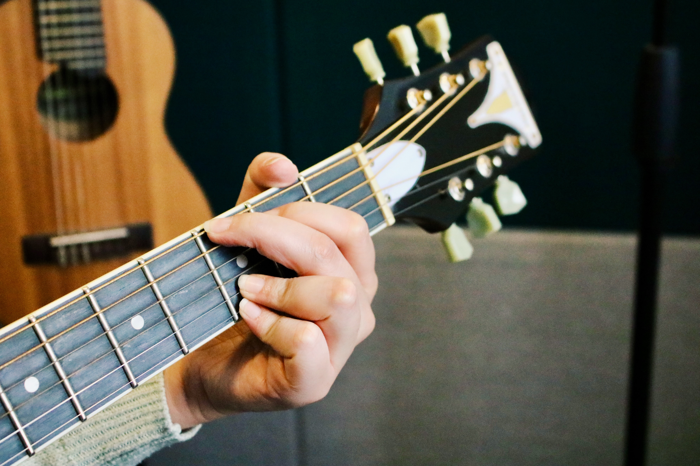

01 — Composición
De una idea suelta a un tema completo.
Melodía, armonía y letra que suenan a ti. Estructura, ganchos y esa progresión que se queda dando vueltas. Aquí Mónica no solo opera equipo: escucha, propone, co-crea.
Empezar a componer →